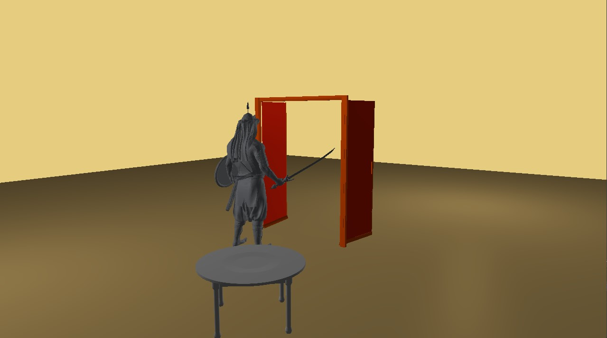

Assignment 2
Group Members
- Yash Ratnani - 2020A7PS0039H
- Rohit Kotha Reddy - 2020A7PS1890H
- Shubh Badjate - 2020A7PS0028H
- Yadav Ankit Ramesh - 2020A7PS2046H
Rendered Scene

What We Implemented
- Importer for Wavefront(.obj) Files with Colors using assimp
- Blinn-Phong Shading Model for our Scene
- Implemented Creating Meshes in Modern OpenGL
- Camera System for our Scene
Build Instructions
- This is tested on Windows
- Required Visual Studio 2022 with C++ Desktop Environment
- media files can be found Here
- Open the project using Visual Studio 2022 and Build the project
- After successfull build, the output files are written to bin\CG-Assignment2\
- you need to copy the assimp dll file which can be found at dependencies\dll\assimp-vc143-mt.dll manually to the output folder above
- make sure that media files are placed in the right directory before running the application
Third Party Libraries and Dependencies
-
glfw
-
glad
-
glm math
-
assimp model importer (needs dll at runtime)
References
- Models
- learnopengl.com
- Blender